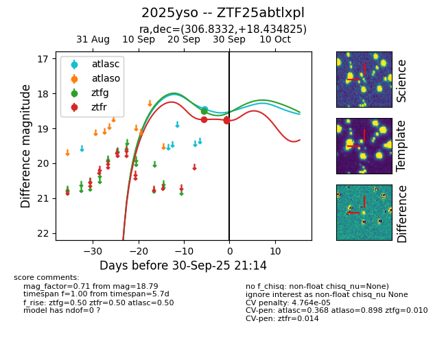
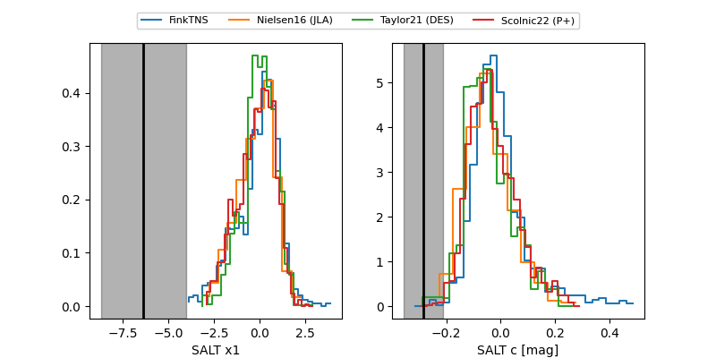

FINK: ZTF25abtlxpl
Lasair: ZTF25abtlxpl
ALeRCE: ZTF25abtlxpl
TNS: 2025yso
YSE: 2025yso
ZTF25abtlxpl (ztf,fink)
2025yso (tns,yse)
equatorial (ra, dec) = (306.8332,+18.43483)
galactic (l, b) = (60.7407,-11.47072)


last atlasc=18.44, ztfg=18.50, ztfr=18.79
1 atlasc, 1 ztfg, 3 ztfr detections